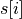
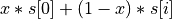
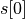
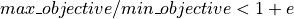
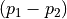
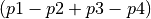

Configuration Keys¶
The following sections give all possible configuration keys that may be used in your .conf file to configure your fitting run. Each line of the .conf file sets the value of a configuration key with the general syntax:
key = value
Required Keys¶
- model
Specifies the mapping between model files (.bngl or .xml) and data files (.exp or .con). Model paths and files are followed by a ‘:’ and then a comma-delimited list of experimental data files or constraint files corresponding to the model files. If no experimental files are associated with a model write
noneinstead of a file path.Examples:
model = path/to/model1.bngl : path/to/data1.expmodel = path/to/model2.xml : path/to/data2.con, path/to/data2.expmodel = path/to/model3.xml : none
- fit_type
The choice of fitting algorithm. Options:
de- Differential Evolutionade- Asynchronous Differential Evolutionss- Scatter Searchpso- Particle Swarm Optimizationbmc- Bayesian Markov chain Monte Carlosim- Simplex local searchsa- Simulated Annealingpt- Parallel tempering
Example:
fit_type = de
- population_size
The number parameter sets to maintain in a single iteration of the algorithm. See algorithm descriptions for more information.
Example:
population_size = 50
- max_iterations
Maximum number of iterations
Example:
max_iterations = 200
Other Path Keys¶
- bng_command
Path to BNG2.pl, including the BNG2.pl file name. This key is required if your fitting includes any .bngl files, unless the BioNetGen path is specified with the BNGPATH env variable.
Default: Uses the BNGPATH environmental variable
Example:
bng_command = path/to/BNG2.pl
- output_dir
Directory where we should save the output.
Default: “bnf_out”
Example:
output_dir = dirname
Parameter and Model Specification¶
- mutant
Declares a model that does not have its own model file, but instead is defined based on another model with some name (e.g.
basemodel). Followingbasemodelis the name of the mutant model; this name is appended to the suffixes of the base model. That is, if the base model has data filesdata1.expanddata2.exp, a corresponding mutant model with the name “m1” should use the filesdata1m1.expanddata2m1.exp.statement1,statement2, etc. specify how to changebasemodelto make the mutant model. The statements have the format [variable][operator][value] ; for examplea__FREE=0orb__FREE*2. Supported operators are=,+,-,*,/.Default: None
Example:
mutant = model0 no_a a__FREE=0 : data1no_a.exp, data2no_a.exp
- uniform_var
A bounded uniformly distributed variable defined by a 3-tuple corresponding to the variable name, minimum value, and maximum value. If the tag
Uis added to the end, the bounds are enforced only during initialization, not during fitting.Examples:
uniform_var = k__FREE 10 20uniform_var = k__FREE 10 20 U
- normal_var
A normally distributed variable defined by a 3-tuple: the name, mean value, and standard deviation. The distribution is truncated at 0 to prevent negative values
Example:
normal_var = d__FREE 10 1
- loguniform_var
A variable distributed uniformly in logarithmic space. The value syntax is identical to the uniform_var syntax
Examples:
loguniform_var = p__FREE 0.001 100loguniform_var = p__FREE 0.001 100 U
- lognormal_var
A variable normally distributed in logarithmic space. The value syntax is a 3-tuple specifying the variable name, the base 10 logarithm of the mean, and the base 10 logarithm of the standard deviation
Example:
lognormal_var = l__FREE 1 0.1
The following two keys (var and logvar) are to be used only with the simplex algorithm. Simplex should not use any of the
other parameter specifications. If you are using another algorithm with the flag refine, you must set the simplex
algorithm’s parameters with simplex_step or simplex_log_step.
- var
The starting point for a free parameter. It is defined by a 3-tuple, corresponding to the variable’s name, its initial value and an initial step size (optional). If not specified, the initial step size defaults to the value specified by the simplex-specific parameter
simplex_step(see simplex)Examples:
var = k__FREE 10var = d__FREE 2 0.05
- logvar
Syntax and sematics are identical to the
varkey above, but the initial value and initial step should be specified in base 10 logarithmic space.Example:
logvar = k__FREE -3 1
Simulation Actions¶
These keys specify what simulations should be performed with the models. For SBML models, simulation actions are required. For BNGL models, the same information can be specified in the actions block of the BNGL file, so use of these keys is optional.
- time_course
Run a time course simulation on the model. Specify a comma-delimited list of
key:valuepairs, with the following possible keys:time: The simulation time. Required.suffix: The suffix of the data file to save. You should map the model to a .exp file of the same name. Default: time_coursestep: The simulation time step. Default: 1model: The name of the model to run (not including the path or .bngl/.xml extension). Default: All models in the fitting run.subdivisions: Only for use withsbml_integrator=euler, specifies the number of internal Euler steps to perform between each output step specified bystep. Default: 1methodThe simulation method to use. Default isode. Options are:ode: Numerical integration of differential equationsssa: Stochastic simulation by Gillespie’s methodpla: Partitioned-leaping algorithm (BNGL models only)nf: Network-free simulation with NFsim (BNGL models only)
Example:
time_course = time:60, model:model1, suffix:data1
- param_scan
Run a parameter scan on the model. Specify a comma-delimited list of
key:valuepairs, with the following possible keys:param: Name of the parameter to scan. Required.min: Minimum value of the parameter. Requiredmax: Maximum value of the parameter. Required.step: Change in the parameter value between consecutive simulations in the scan. Required.time: The simulation time. Required.suffix: The suffix of the data file to save. You should map the model to a .exp file of the same name. Default: param_scanlogspace: If 1, scan the parameter in log space. Default: 0model: The name of the model to run (not including the path or .bngl/.xml extension). Default: All models in the fitting run.subdivisions: Only for use withsbml_integrator=euler, specifies the number of internal Euler steps to perform for each simulation. Default: 1000method: The simulation method to use. Options are the same as intime_course. Default: ode
Example:
param_scan = param:x, min:1, max:1000, step:0.5, logspace:1, time:60, model:model1, suffix:data1
Parallel Computing¶
- parallel_count
The number of jobs to run in parallel. This may be set for both local and cluster fitting runs. For cluster runs, this number is divided by the number of available nodes (and rounded up) to determine the number of parallel jobs per node.
Default: Use all available cores. On a cluster, the number of available cores per node is determined by running
multiprocessing.cpu_count()from the scheduler node.Example:
parallel_count = 7
- cluster_type
Type of cluster used for running the fit. This key may be omitted, and instead specified on the command line with the
-tflag. Currently supportsslurmornone. Will supporttorqueandpbsin the future.Default: None (local fitting run).
Example:
cluster_type = slurm
- scheduler_file
Provide a scheduler file to link PyBNF to a Dask scheduler already created outside of PyBNF. See Manual configuration with Dask for more information. This option may also be specified on the command line with the
-sflag.Default: None
Example:
scheduler_file = cluster.json
- scheduler_node
Manually set node used for creating the distributed Client – takes a string identifying a machine on a network. If running on a cluster with SLURM, it is recommended to use automatic configuration with the flag
-t slurminstead of using this key.Default: None
Example:
scheduler_node = cn180
- worker_nodes
Manually set nodes used for computation - takes one or more strings separated by whitespace identifying machines on a network. If running on a cluster with SLURM, it is recommended to use automatic configuration with the flag
-t slurminstead of using this key.Default: None
Example:
worker_nodes = cn102 cn104 cn10511
General Options¶
Output Options¶
- delete_old_files
Takes an integer for a value. If 1, delete simulation folders immediately after they complete. If 2, delete both old simulation folders and old sorted_params.txt result files. If 0, do not delete any files (warning, could consume a large amount of disk space).
Default: 1
Example:
delete_old_files = 2
- num_to_output
The maximum number of parameter sets to output when writing the trajectory to file. The parameter sets are ordered by their corresponding objective function value to ensure the best fits are outputted.
Default: 5000
Example:
num_to_output = 100000
- output_every
The number of iterations in between consecutive events writing the trajectory to file.
Default: 20
Example:
output_every = 1000
- save_best_data
If 1, run an extra simulation at the end of fitting using the best-fit parameters, and save the best-fit .gdat and .scan files to the Results directory.
Default: 0
Example:
save_best_data = 1
- verbosity
An integer value that specifies the amount of information output to the terminal.
- 0 - Quiet: User prompts and errors only
- 1 - Normal: Warnings and concise progress updates
- 2 - Verbose: Information and detailed progress updates
Default: 1
Example:
verbosity = 0
Algorithm Options¶
- objfunc
Which objective function to use.
chi_sq- Chi squaredsos- Sum of squaresnorm_sos- Sum of squares, normalized by the value at each point,ave_norm_sos- Sum of squares, normalized by the average value of the variable.
Default: chi_sq
Example:
objfunc = chi_sq
- bootstrap
If assigned a positive value, estimate confidence intervals through a bootstrapping procedure. The assigned integer is the number of bootstrap replicates to perform.
Default: 0 (no bootstrapping)
Example:
bootstrap = 10
- bootstrap_max_obj
The maximum value of a fitting run’s objective function to be considered valid in the bootstrapping procedure. If a fit ends with a larger objective value, it is discarded.
Default: None
Example:
bootstrap_max_obj = 1.5
- constraint_scale
Scale all weights in all constraint files by this multiplicative factor. For convenience only: The same thing could be achieved by editing constraint files, but this option is useful for tuning the relative contributions of quantitative and qualitative data.
Default: 1 (no scaling)
Example:
constraint_scale = 1.5
- ind_var_rounding
If 1, make sure every exp row is used by rounding it to the nearest available value of the independent variable in the simulation data. (Be careful with this! Usually, it is better to set up your simulation so that all experimental points are hit exactly)
Default: 0
Example:
ind_var_rounding = 1
- initialization
How to initialize parameters.
rand- initialize params randomly according to the distributions.lh- Forrandom_vars andloguniform_vars, initialize with a latin hypercube distribution, to more uniformly cover the search space.
Default: lh
Example:
initialization = rand
- local_objective_eval
If 1, evaluate the objective function locally, instead of parallelizing this calculation on the workers. This option is automatically enabled when using the
smoothingfeature.Default: 0 (unless smoothing is enabled)
Example:
local_objective_eval = 1
- min_objective
Stop fitting if an objective function lower than this value is reached.
Default: None; always run for the maximum iterations
Example:
min_objective = 0.01
- normalization
Indicates that simulation data must be normalized in order to compare with exp files. Specify one of the following types of normalization:
init- normalize to the initial valuepeak- normalize to the maximum valuezero- normalize such that each column has a mean of 0 and a standard deviation of 1unit- Scales data so that the range of values is between (min-init)/(max-init) and 1 (if the maximum value is 0 (i.e. max == init), then the data is scaled by the minimum value after subtracting the initial value so that the range of values is between 0 and -1).
If only the type is specified, the normalization is applied to all exp files. If the type is followed by a ‘:’ and a comma-delimited list of exp files, it applies to only those exp files. Additionally, you may enclose an exp file in parentheses, and specify which columns of that exp file get normalized, as in
(data1.exp: 1,3-5)or(data1.exp: var1,var2). Multiple lines with this key can be used.Default: No normalization
Examples:
normalization = initnormalization = init: data1.exp, data2.expnormalization = init: (data1.exp: 1,3-5), (data2.exp: var1,var2)
- postprocess
Used to specify a custom Python script for postprocessing simulation results before evaluating the objective function. Specify the path to the Python script, followed by a list of all of the simulation suffixes for which that postprocessing script should be applied. For how to set up a postprocessing script, see Custom Postprocessing.
Default: No postprocessing
Example:
postprocess = path/to/script.py suff1 suff2
- refine
If 1, after fitting is completed, refine the best fit parameter set by a local search with the simplex algorithm.
Default: 0
Example:
refine = 1
- sbml_integrator
Which integrator to use for SBML models. Options are
cvode,rk4,gillespie, oreuler, and are described in the libroadrunner documentation. If yourtime_courseorparam_scankey specifiesmethod: ssa, thengillespieis used for that action, overriding this setting.eulerrequires libroadrunner v. 1.5.1 or higher, which currently must be installed explicitly via pip:pip uninstall libroadrunner && pip install --no-cache libroadrunner==1.5.1
Default: cvode
Example:
sbml_integrator = rk4
- smoothing
Number of replicate runs to average together for each parameter set (useful for stochastic simulations).
Default: 1
Example:
smoothing = 2
- wall_time_gen
Maximum time (in seconds) to wait to generate the network for a BNGL model. Will cause the program to exit if exceeded.
Default: 3600
Example:
wall_time_gen = 600
- wall_time_sim
Maximum time (in seconds) to wait for a simulation to finish. Exceeding this results in an infinite objective function value. Caution: For SBML models, using this option has an overhead cost, so only use it when needed.
Default: 3600 for BNGL models; No limit for SMBL models
Example:
wall_time_sim = 600
Algorithm-specific Options¶
Simplex¶
These settings for the simplex algorithm may also be used when running other algorithms with refine = 1.
- simplex_step
In initialization, we perturb each parameter by this step size. If you specify a step size for a specific variable via
varorlogvar, it overrides this setting.Default: 1
Example:
simplex_step = 0.5
- simplex_log_step
Equivalent of
simplex_step, for variables that move in log space.Default: Value of
simplex_stepExample:
simplex_log_step = 0.5
- simplex_reflection
When we reflect a point through the centroid, what is the ratio of dilation on the other side?
Default: 1.0
Example:
simplex_reflection = 0.5
- simplex_expansion
If the reflected point was the global minimum, how far do we keep moving in that direction? (as a ratio to the initial distance to centroid)
Default: 1.0
Example:
simplex_expansion = 0.5
- simplex_contraction
If the reflected point was not an improvement, we retry at what distance from the centroid? (as a ratio of the initial distance to centroid)
Default: 0.5
Example:
simplex_contraction = 0.3
- simplex_shrink
If a whole iteration was unproductive, shrink the simplex by setting simplex point  to , where x is the value of this key and  is the best point in the simplex.
Default: 0.5
Example:
simplex_shrink = 0.3
- simplex_max_iterations
If specified, overrides the
max_iterationssetting. Useful if you are using therefineflag and wantmax_iterationsto refer to your main algorithm.Example:
simplex_max_iterations = 20
- simplex_stop_tol
Stop the algorithm if all parameters have converged to within this value (specifically, if all reflections in an iteration move the parameter by less than this value)
Default: 0 (don’t use this criterion)
- Example:
simplex_stop_tol = 0.01
Differential Evolution¶
PyBNF offers two versions of differential evoltution: synchronous differential evolution (fit_type = de) and asynchronous differential evolution (fit_type = ade). Both versions may be configured with the follwing keys.
- mutation_rate
When generating a new individual, mutate each parameter with this probability.
Default: 0.5
Example:
mutation_rate = 0.7
- mutation_factor
When mutating a parameter x, change it by mutation_factor*(PS1[x] - PS2[x]) where PS1 and PS2 are random other PSets in the population.
Default: 1.0
Example:
mutation_factor = 0.7
- stop_tolerance
Stop the run if within the current popluation, , where e is the value of this key. This criterion triggers when the entire population has converged to roughly the same objective function value.
Default: 0.002
Example:
stop_tolerance = 0.001
- de_strategy
Specifies how new parameter sets are chosen. The following options are available:
rand1rand2best1best2all1all2
The first part of the string determines which parameter set we mutate:
rand- a random onebest- the one with the lowest objective valueall- the one we are proposing to replace (so all psets are mutated once per iteration).
The second part of the string specifies how we calculate the amount by which to mutate each parameter:
1- Use 1 pair of other parameter sets: 2- Use 2 pairs of other parameter sets: .
Default: rand1
Example:
de_strategy = rand2
The following options are only available with fit_type = de, and serve to make the algorithm more asynchronous. If used, these options enable island-based differential evolution, which is asynchronous in that each island can independently proceed to the next iteration.
- islands
Number of separate populations to evolve.
Default: 1
Example:
islands = 2
- migrate_every
After this number of generations, migrate some individuals between islands.
Default: 20 (but Infinity if
islands = 1)Example:
migrate_every = 10
- num_to_migrate
How many individuals to migrate off of each island during migration.
Default: 3
Example:
num_to_migrate = 5
Scatter Search¶
- init_size
Number of parameter sets to test to generate the initial population.
Default: 10 * number of parameters
Example:
init_size = 100
- local_min_limit
If a point is stuck for this many iterations without improvement, it is assumed to be a local min and replaced with a random parameter set.
Default: 5
Example:
local_min_limit = 10
- reserve_size
Scatter Search maintains a latin-hypercube-distributed “reserve” of parameter sets. When it needs to pick a random new parameter set, it takes one from the reserve, so it’s not similar to a previous random choice. The initial size of the reserve is this value. If the reserve becomes empty, we revert to truly random pset choices.
Default: Value of
max_iterationsExample:
reserve_size = 100
Particle Swarm¶
- cognitive
Acceleration toward a particle’s own best fit
Default: 1.5
Example:
cognitive = 1.7
- social
Acceleration toward the global best fit
Default: 1.5
Example:
social = 1.7
- particle_weight
Inertia weight of particle. A value less than 1 can be thought of as friction that contniuously decelerates the particle.
Default: 0.7
Example:
particle_weight = 0.9
- v_stop
Stop the algorithm if the speeds of all parameters in all particles are less than this value.
Default: 0 (don’t use this criterion)
Example:
v_stop = 0.01
A variant of particle swarm that adaptively changes the particle_weight over the course of the fitting run is configured with the following parameters. See the algorithm documentation for more information.
- particle_weight_final
The final particle weight after the adaptive weight changing.
Default: the value of
particle_weight, effectively disabling this feature.Example:
particle_weight_final = 0.5
- adaptive_n_max
After this many “unproductive” iterations, we have moved halfway from the initial weight to the final weight.
Default: 30
Example:
adaptive_n_max = 20
- adaptive_n_stop
Afer this many “unproductive” iterations, stop the fitting run.
Default: Inf
Example:
adaptive_n_stop = 50
- adaptive_abs_tol
Parameter for checking if an iteration was “unproductive”
Default: 0
Example:
adaptive_abs_tol = 0.01
- adaptive_rel_tol
Parameter for checking if an iteration was “unproductive”
Default: 0
Example:
adaptive_rel_tol = 0.01
Bayesian Algorithms (bmc, pt, sa)¶
In the family of Bayesian algoritms with Metropolis sampling, PyBNF includes MCMC (fit_type = bmc), Parallel Tempering (fit_type = pt), and Simulated Annealing (fit_type = sa). These algorithms have many configuration keys in common, as described below.
For all Bayesian algorithms¶
- step_size
When proposing a Monte Carlo step, the step in n-dimensional parameter space has this length.
Default: 0.2
Example:
step_size = 0.5
- beta
Sets the initial beta (1/temperature). A smaller beta corresponds to a more broad exploration of parameter space. If a single value is provided, that beta is used for all replicates. If multiple values are provided, an equal number of replicates uses each value.
For
mcmc, should be set to 1 (the default) to get the true probability distribution.For
pt, should specify multiple values: the number of values should equalpopulation_size/reps_per_beta. Or you may instead use thebeta_rangekey. Only the largest beta value in the list will constribute to statistical samples, and to get the true probability distribution, this maximum value should be 1.For
sa, should typically be set to a single, small value which will increase over the course of the fitting run.Default: 1
Examples:
beta = 0.9beta = 0.7 0.8 0.9 1
For all Bayesian algorithms except sa¶
- sample_every
Every x iterations, save the current PSet into the sampled population. Default: 100
Example:
sample_every = 20
- burn_in
Don’t sample for this many iterations at the start, to let the system equilibrate.
Default: 10000
Example:
burn_in = 1000
- output_hist_every
Every x samples (i.e every x*sample_every iterations), save a historgram file for each parameter, and the credible interval files, based on what has been sampled so far. Regardless, we also output these files at the end of the run.
Default: 100
Example:
output_hist_every = 10
- hist_bins
Number of bins used when writing the histogram files.
Default: 10
Example:
hist_bins = 20
- credible_intervals
Specify one or more numbers here. For each n, the algorithm will save a file giving bounds for each parameter such that in n% of the samples, the parameter lies within the bounds.
Default: 68 95
Examples:
credible_intervals = 95credible_intervals = 20 68 95
For Simulated Annealing¶
- beta_max
Stop the algorithm if all replicates reach this beta (1/temperature) value.
Default: Infinity (don’t use this stop criterion)
Example:
beta_max = 1.5
- cooling = float
Each time a move to a higher energy state is accepted, increase beta (1/temperature) by this value.
Default: 0.01
Example:
cooling = 0.001
For Parallel Tempering¶
- exchange_every
Every x iterations, perform replica exchange, swapping replicas that are adjacent in temperature with a statistically correct probability
Default: 20
Example:
exchange_every = 10
- reps_per_beta
How many identical replicas to run at each temperature. Must be a divisor of
population_size.Default: 1
Example:
reps_per_beta = 5
- beta_range
As an alternative to setting
beta, the range of values of beta to use. Specify the minimum value, followed by the maximum value. The replicates will usepopulation_size/reps_per_betaevenly spaced beta values within this range. Only the replicas at the max beta value will be sampled. For the true probability distribution, the maximum value should be 1.Default: None (betas are set with the
betakey)Example:
beta_range = 0.5 1